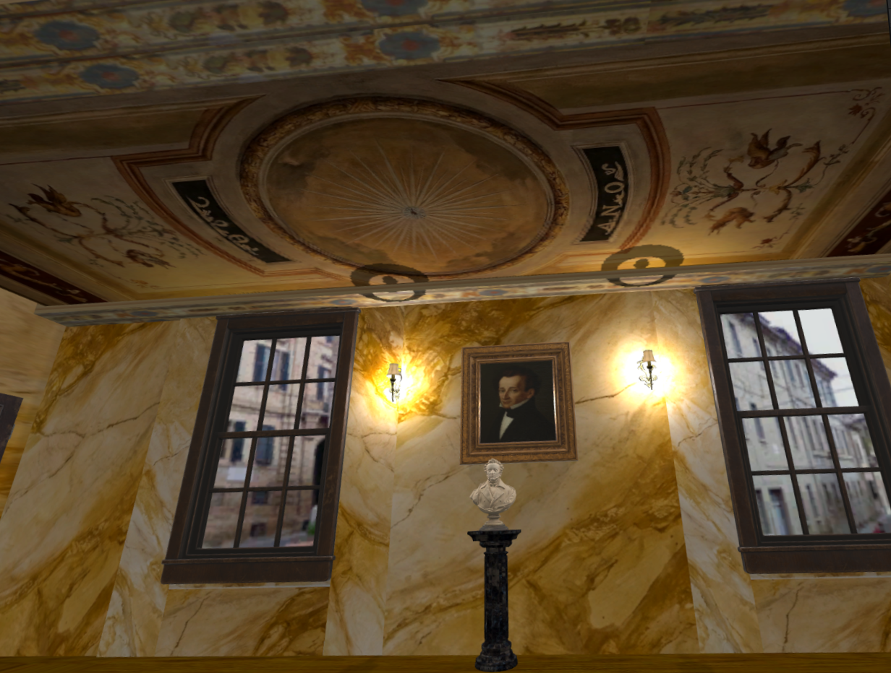
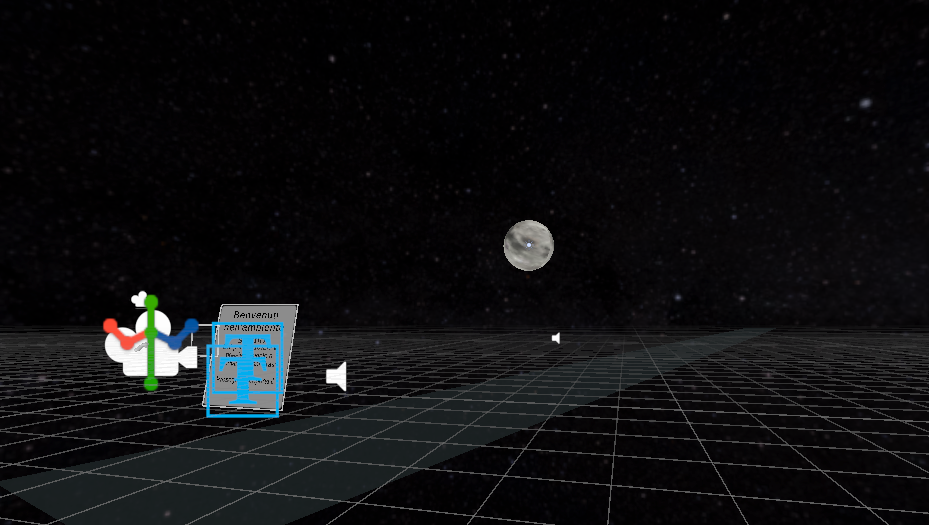
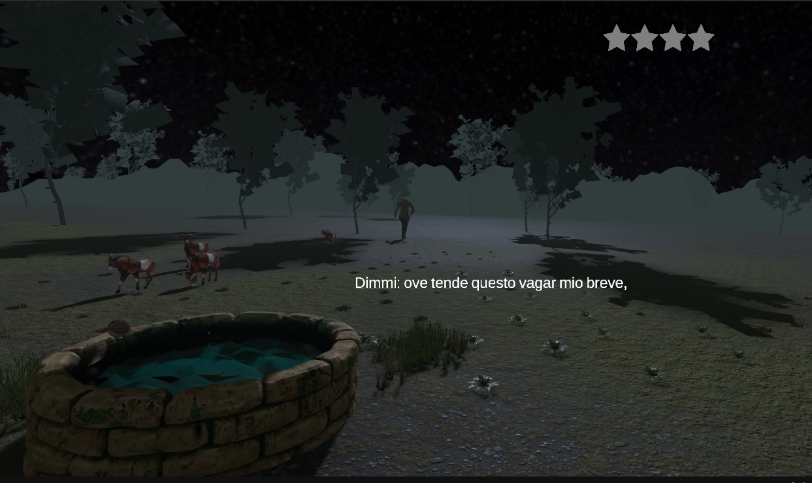
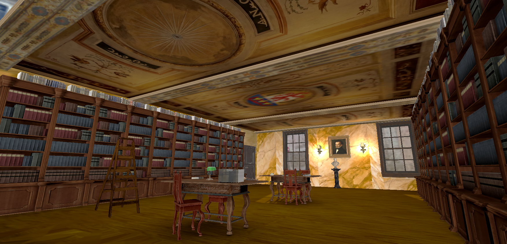
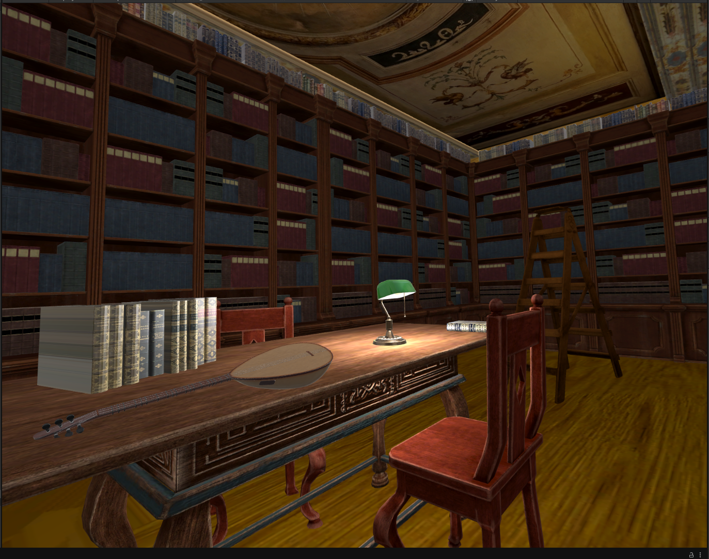
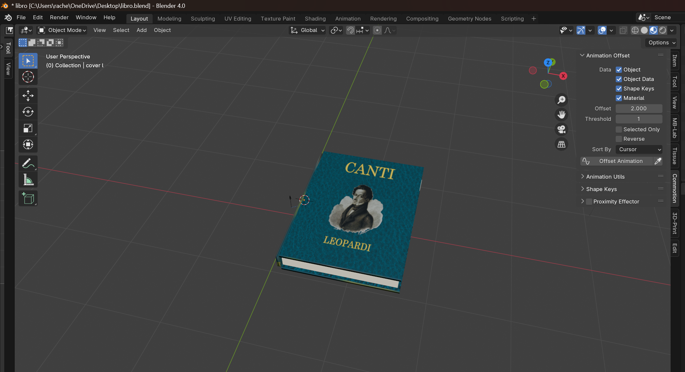
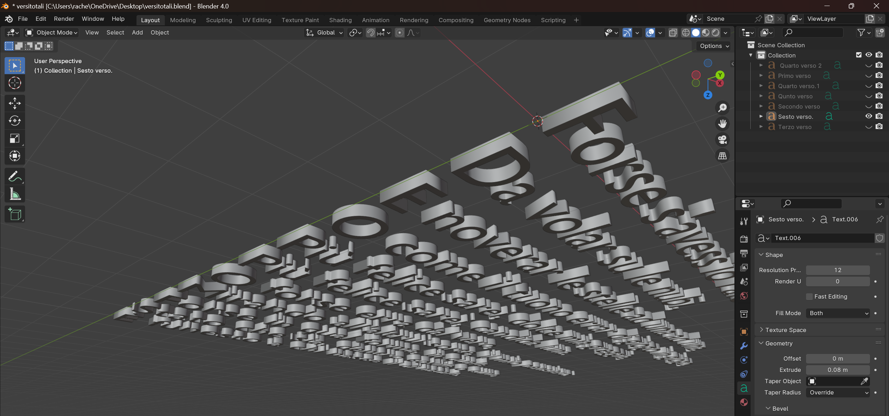
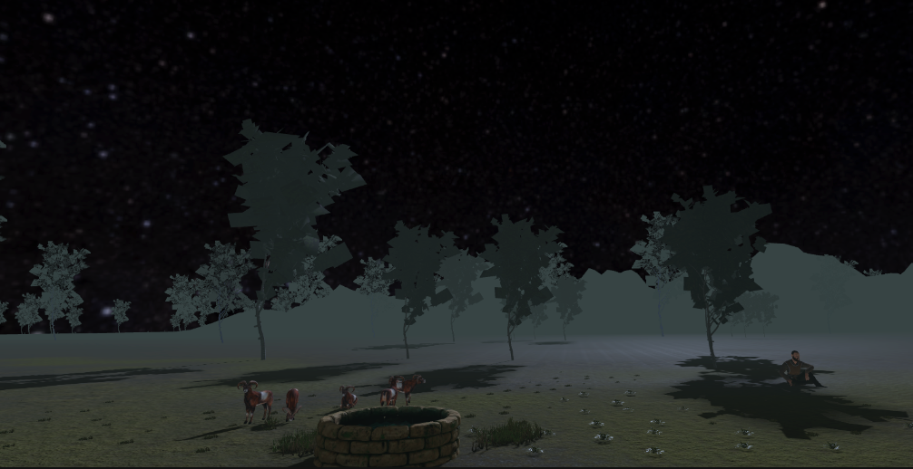

01 · HUB
The study
A reconstruction of the poet's study in Recanati that doubles as menu and tutorial. Users learn the controllers by switching on a lamp and moving a ladder, then select a book to choose where to go.
Che fai tu, luna, in ciel?
GIACOMO LEOPARDI, CANTO NOTTURNO DI UN PASTORE ERRANTE DELL'ASIA
Can walking through a poem help people study it?
Three connected scenes. Every session starts in Leopardi's study, and every path leads back to it.

01 · HUB
A reconstruction of the poet's study in Recanati that doubles as menu and tutorial. Users learn the controllers by switching on a lamp and moving a ladder, then select a book to choose where to go.

02 · STUDY
A walkway suspended in space, with the moon always in view. Each stanza appears as you walk forward; selecting it plays the recitation and opens a paraphrase.

03 · PLAY
A night landscape evoking the poem's Asian steppe. Interacting with objects reveals the stanzas in one of four orders drawn from scholarly readings of Leopardi's manuscript. Each completed path earns a star.
The manuscript shows that Leopardi changed the order of the poem's six stanzas, numbering them by hand. From this philological evidence and critical literature, I derived four reading paths implemented as a 4-branch state tree.
In the Gameplay
Environment, interacting with custom XR objects unlocks the paths one at a time, persisting
progression via PlayerPrefs. Each path ends back in the study.





I rebuilt Leopardi's study in Unity with ProBuilder, using photographs of the real room in Recanati as reference, and furnished it with Sketchfab assets; the windows look out on a 360° image of the real square outside. I modeled the 3D stanzas and the book of the Canti in Blender.
Because real-time indirect lighting causes severe mobile GPU bottlenecks on standalone headsets, the lighting was baked and paired with Linear Fog for the night atmosphere.
Built in Unity 6 (URP) with OpenXR and the XR Interaction Toolkit, running standalone on Meta Quest 2.
XRGrabInteractable and XRSimpleInteractable, overriding
OnHoverEntered and OnSelectEntered for outline feedback, and
forcing
a clean release with interactionManager.SelectExit() before disabling a held
object.
JsonUtility, shown on a panel that lazily follows
the user's gaze (Vector3.Lerp) to reduce discomfort.Renderer cached up front.
DontDestroyOnLoad) saves the four reading paths in
PlayerPrefs and raises C# events, so the star HUD updates without polling.
Quitting clears the save, so every test participant starts fresh.
NavMeshAgent and driven by Animator states,
triggered by the user's actions.Attention to the text
Understanding the poem
Remembering verses and concepts
Share of participants (N=40). One participant did not answer the last two questions.
A counterbalanced study with 40 participants on Meta Quest 2: half started with the Information Landscape, half with the Gameplay Environment. I watched every session live through headset casting, then ran a 26-item questionnaire on a 5-point Likert scale, with reverse-scored items to limit response bias.
The two environments did different jobs: the Information Landscape helped more with understanding the poem, the Gameplay Environment with remembering it. Asked which one best represents the poem, 46% chose the Gameplay Environment, another 46% said both, and fewer than 8% picked the Information Landscape alone. Participants who rarely or never read gave the highest engagement score (4.88/5, SD = 0.35, n = 8), above regular readers (4.47).
The lowest score was concentration on the text (3.9/5), and some first-time users struggled with the controllers. In a next version I would reduce visual distraction around the verses, make the controller tutorial gentler, let users turn off the narration, add interactive notes on single words and an in-game menu to track progress.
4.3/5
Immersion and presence
4.3/5
Usability
4.2/5
Comfort (no motion sickness)
97.5%
Said it was useful for studying the poem